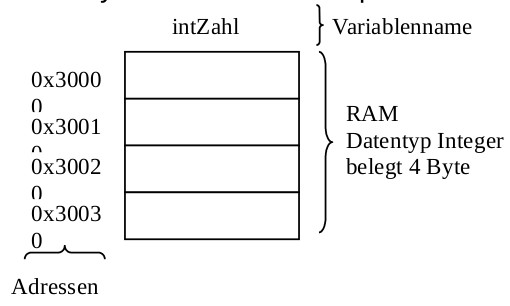

{% extends "../_base_template.html" %}
{% block title %}Lektion 7 - Basis-Datenstrukturen{% endblock %}

{% block sections %}
<section data-markdown >
<textarea data-template>
<i class="fas fa-graduation-cap"></i> Lektion 7 - Basis-Datenstrukturen
=============================

Ziele für die nächsten beiden Lektionen

* Sie wissen, wie Variablen im Arbeitsspeicher organisiert werden
* Sie kennen die Unterschiede von typisierten / nicht typisierten Programmiersprachen
* Sie kennen die drei Eigenschaften von Daten
* Sie kennen die zwei Grundprinzipien, warum abstrakte Datentypen definiert werden
* Sie können die Struktur "Stack" anhand eines Beispiels erklären
* Sie können Arrays in Java anwenden
* Sie verstehen die Komplexität von Einfügen / Entfernen-Operationen mit Arrays
* Sie kennen die Java-Klasse "Vector"

</textarea>
</section>

<section data-markdown >
<textarea data-template>
<i class="fas fa-graduation-cap"></i> Datentypen
=============================

Was ist ein **Datentyp**? Lesen Sie dazu selbständig **Kapitel 3 - Datentypen** vom Script 2.1 von Christian Inauen (auf Moodle).

Versuchen Sie, folgende Kontrollfragen zu beantworten:

**Daten:**

* Was sind "Daten", wenn wir vom Computerprogrammen reden?
* Wie werden Daten im Speicher des Computers abgelegt / gespeichert?
* Wie haben Sie Zugriff auf diese Daten in Ihrem Programm?
* Nennen Sie die drei Eingenschaften von Daten!

**Datentypen:**

* Was ist ein Datentyp? Definieren Sie diesen Begriff!
* Versuchen Sie selbst Datentypen zu definieren. Beispiel: "Positive Ganzzahlen"
* Was ist der Unterschied zwischen typisierten und untypisierten Datentypen?
* Was ist ein abstrakter Datentyp? Machen Sie ein Beispiel!
</textarea>
</section>

<section data-markdown >
<textarea data-template>
<i class="fas fa-graduation-cap"></i> Datentypen - Daten
=============================

**Was sind Daten?**

> Daten sind Information, welche (maschinen-) lesbar und bearbeitbar sind und in einem Bedeutungskontext stehen. Die Information
wird dazu in Zeichen/Zahlen oder Zeichenketten codiert. Die Codierung erfolgt gemäss klarer Regeln, der sogenannten Syntax.

**Wie werden Daten im Speicher des Computers abgelegt / gespeichert?**<br />
**Wie haben Sie Zugriff auf diese Daten in Ihrem Programm?**

* Daten speichern: Sie deklarieren "Variablen" (Platzhalter) in der Programmiersprache.
* Variablen bestehen aus einem **Datentyp** und einem **Namen**
* Es wird Platz aus dem Arbeitsspeicher verwendet
* Der "Platz" im Arbeitsspeicher hat eine Adresse.
  * In C können Speicherbereiche direkt zugegriffen / modifiziert werden. Sie müssen auch selber für die Reservation / Freigabe sorgen.
  * In Java können Adressbereiche **nicht** direkt zugegriffen werden. Um die Freigabe kümmert sich der **Garbage Collector**.


** Nennen Sie die drei Eingenschaften von Daten!**

* Die **Bezeichnung** erklärt den semantischen Teil (die Bedeutung) des Datenobjekts.
* Die **Wertemenge** bestimmt die Syntax (die Form oder Codier-Regel) des Datenobjekts.
* Der **Speicherplatz** lokalisiert das Datenobjekts im Speicher und identifiziert dieses eindeutig.
</textarea>
</section>

<section data-markdown >
<textarea data-template>
<i class="fas fa-graduation-cap"></i> Datentypen - Daten im Arbeitsspeicher
=============================

(siehe Script C. Inauen)



* Der Arbeitsspeicher hat somit nur Zellen von 8 bit Grösse.
* Je nach Datentyp benötigt man somit mehr oder weniger 8-bit-Zellen.
* auf einem 64-bit-System benötigt somit ein einfacher Integer 8 Speicherzellen à 8 bit!
* Je nach System / Programmiersprache sind die Datentypen anders definiert. (Java: ein int ist 32bit, C: int benötigt die native Prozessor-Breite, also heute meist 64bit)
* Der Speichermanager muss somit wissen, wieviele Zellen er auslesen / beschreiben muss, wenn ich als Programmierer einen Wert einer Variable schreibe.
</textarea>
</section>

<section data-markdown >
<textarea data-template>
<i class="fas fa-graduation-cap"></i> Datentypen - Was ist ein Datentyp?
=============================

**Was ist ein Datentyp? Definieren Sie diesen Begriff!**

> Ein Datentyp ist eine (endliche) Menge (eines bestimmten Wertebereichs) zusammen mit einer Anzahl Operationen für die Arbeit
mit diesem Datentyp.

Wir sprechen hier von einem "simplen Datentypen":

**Als Beispiel: Datentyp "Positive Ganzzahlen"**

* Wertebereich: 0 - unendlich (oder max integer)
* Operationen: Addieren, Subtrahieren, Multiplizieren, Potenzieren, Modulo

Es ist wichtig, dass wir zwischen der (abstrakten) Beschreibung eines Datentyps (Spezifikation) und dessen Implementierung
unterscheiden. Wenn wir komplizierte Probleme lösen wollen, müssen wir von den Details abstrahieren können. Wir wollen nicht
wissen (müssen) wie genau ein Datentyp implementiert ist, sondern bloss, wie wir den Datentyp verwenden können (welche Dienste
er anbietet). Dieses Vorgehen erscheint im ersten Moment nicht sonderlich zielführend. Aber es ist oft wichtig diese Abstraktionsfähigkeiten
zu trainieren.

**Beispiel der Anwendung des "Positive Ganze Zahlen"-Datentyps:**

In einer Programmiersprache könnte unser erfundener Datentyp z.B. folgendermassen verwendet werden: Wie dies konkret umgesetzt (implementiert) wird, interessiert uns
als Programmierer nicht:

```
// deklarieren als Variable:
unsigned_int a = 5; // OK
unsigned_int b = -3; // Fehler: entspricht nicht dem Wertebereich

// Verwendung der Operationen für diesen Datentypen:
unsigned_int result = a * a; // Multiplizieren ist eine auf dem Datentypen definierte Operation
```

Wie wir solche Datentypen selber definieren können, sehen wir im Kapitel "Abstrakte Datentypen".
</textarea>
</section>

<section data-markdown >
<textarea data-template>
<i class="fas fa-graduation-cap"></i> Datentypen - (un)typisierte Sprachen
=============================

**Was ist ein abstrakter Datentyp? Machen Sie ein Beispiel!**

Nicht alle Programmiersprachen gehen mit Datentypen "gleich streng" um: Je nach Sprache kann eine Variable, einmal definiert, nur diesen Datentyp speichern, oder eben unterschiedliche.

Das führt zu zwei entgegengesetzten Sprach-Konzepten:

* **untypisierte Sprachen**: Den Variablen werden keine Datentypen zugeordnet / Datentypen werden während der Kompilierung nicht überprüft (Nennen Sie Beispiele!).
* **typisierte Sprachen**: Den Variablen werden strikte Datentypen zugewiesen: Eine Variable kann nur Werte von einem bestimmten Datentypen "aufnehmen". Der Compiler überprüft die Zuweisung von Daten auf ihren Typ (ihre "Form").
  Nennen Sie Beispiele.

<pre><!-- .element: class="fragment" data-fragment-index="1" --><code>
// Beispiel PHP (untypisierte Sprache):
// Variable, mit Integer befüllt:
$a = 5;

// Spätere Zuweisung eines Strings:
$a = "Hello"; // geht!
</code></pre>

<pre><!-- .element: class="fragment" data-fragment-index="1" --><code>
// Beispiel Java (typisierte Sprache):
// Variable, als Integer deklariert
int a = 5;

// Spätere Zuweisung eines Strings:
a = "Hello";  // --> führ zu einem Compilerfehler!
</code></pre>
</textarea>
</section>

<section data-markdown >
<textarea data-template>
<i class="fas fa-graduation-cap"></i> Datentypen - Abstrakte Datentypen
=============================

**Was ist der Unterschied zwischen typisierten und untypisierten Datentypen?**

Der abstrakte Datentyp ist ein wichtiges Konzept in der modernen Informatik: Die Philosophie der objektorientierten Sprachen
basiert genau auf dieser Idee.

**Der abstrakte Datentyp dient dazu, Datentypen unabhängig von deren Implementation zu definieren.**

Die Idee des abstrakten Datentyps beruht auf zwei wichtigen Prinzipien:

1. Das Geheimnisprinzip
2. Prinzip der Wiederverwendbarkeit.
</textarea>
</section>

<section data-markdown >
<textarea data-template>
<i class="fas fa-graduation-cap"></i> Datentypen - Abstrakte Datentypen
=============================

**Geheimnisprinzip**

> Dem Benutzer eines Datentyps werden nur die auf diesem Datentyp erlaubten Operationen (mit deren Spezifikation) bekanntgegeben.
Die Implementation des Datentyps bleibt für den Benutzer verborgen (abstrakt, Kapselung).

Im "richtigen Leben" finden Sie dies an vielen Orten. Zum Beispiel:

Ich persönlich weiss nicht GENAU, wie mein Auto funktioniert. Ich kann aber:

* ... gas geben (Operation des Autos: Gaspedal)
* ... bremsen (Operation des Autos: Bremspedal)
* ... lenken (Operation des Autos: Steuerrad)
* ... blinken (Operation des Autos: Blinkerhebel)

Der Datentyp (Auto) erlaubt mir somit durch Operationen, Dinge damit "zu tun". Ich muss als Anwender aber nicht genau wissen, wie das Auto nun "gas gibt":

* Der Anwender kann den Datentyp nur im Sinne der Definition verwenden
* Die Implementation des Datentyps kann jederzeit verändert werden, ohne Auswirkungen auf bestehenden Code (solange die Operation noch dasselbe tut)
* Die Verantwortungen zwischen Anwender und Implemenator des Datentyps sind durch die Definition klar geregelt.
</textarea>
</section>

<section data-markdown >
<textarea data-template>
<i class="fas fa-graduation-cap"></i> Datentypen - Abstrakte Datentypen
=============================

**Wiederverwendbarkeits-Prinzip**

> Ein Datentyp soll in verschiedenen Applikationen / Modulen wiederverwendet werden können, wenn ähnliche Probleme gelöst werden müssen.

</textarea>
</section>

<section data-markdown >
<textarea data-template>
<i class="fas fa-graduation-cap"></i> Datentypen - Abstrakte Datentypen
=============================

**Beispiel: Datentyp _Stack_**

Einen Stack können Sie sich wie einen Rucksack vorstellen, den Sie nur von oben beladen / entladen können: Das zuerst eingefüllte Element können Sie erst zuletzt wieder entnehmen.

Bei diesem Rucksack (oder Datentyp) gibt es verschiedene Funktionen:

* **Einpacken**: Element in Rucksack legen
* **Rausnehmen**: oberstes Element aus Rucksack entnehmen
* **Anschauen**: oberstes Element anschauen, ohne es zu entnehmen
* **Leer**: Diese Operation prüft, ob der Rucksack leer ist.

**Konkrete Definition des Datentyps**

```java
public interface Stack {
	/**
	 * Wir wollen etwas (ein int) im Stack ablegen (keine negativen Zahlen erlaubt)
	 * @param x
	 */
	void push(int x);

	/**
	 * Die Funktion pop() gibt uns das oberste Element zurück, und entfernt es aus dem Stack
	 * @return int
	 */
    int pop();

    /**
     * Die Funktion peek() liefert das oberste Element, ohne es jedoch aus dem Stack zu entfernen
     * @return int
     */
    int peek();

	/**
	 * Gibt einen Boolean zurück ob der Stack leer ist oder nicht
	 * @return
	 */
	boolean isEmpty();
}
```

Das Java-Interface definiert uns hier den Datentyp _Stack_: Die Implementation dazu werden Sie selbständig angehen (siehe Moodle, StackAufgabe).
</textarea>
</section>
{% endblock %}
